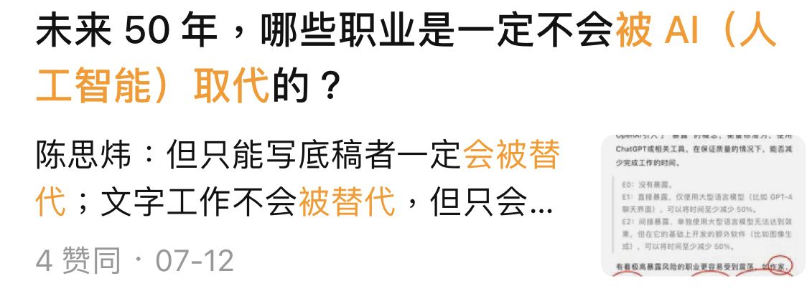
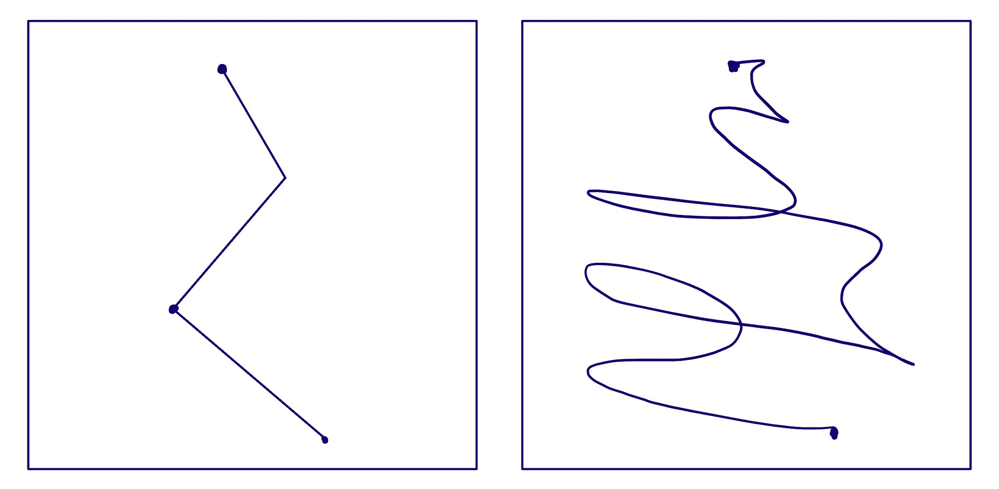

半夜的AI焦慮
剛剛在擔心統計會不會被AI取代的事，就上知乎搜了下

在我看到這些提問後，反而不太關心答案了。為什麼要這麼多“一定”？還記得我小學的時候看老師的紅筆總是滿墨水的，我就問這筆是永遠可以的嘛。滄元圖裡的原初之石，有不受環境影響、始終如一的性質。電影Elemental裡的vivisteria花，可以在任何環境生存。每個人都想找“一定”、“絕對”。但是拜託，經典力學都被推翻了，還有什麼是不能被變的。
回到這個問題上來。首先，沒有人知道未來是什麼樣，都在猜，這個問題沒有意義。再來，聽別人的安排走完一生豈不是很沒意思。高考完聽別人說這個專業怎樣那個怎樣，到處打聽，然後上大學，一待就是四年。出來接著讀研，可能看看知乎回答，選一些“不會被取代”的方向。人們把自己困在信息茧房裡，一直接收別人的觀點，釘死一個方向努力，其實就是巨嬰式思維，不會時不時停下來看看四周，思考自己在哪。這就好比旅遊，有的人只是直達某個打卡點，就走了；有的人隨機漫步，會見到更多有趣的事。人生不就是場旅行，如果走成折線該多沒意思，充滿不確定性，何嘗不是種刺激？
